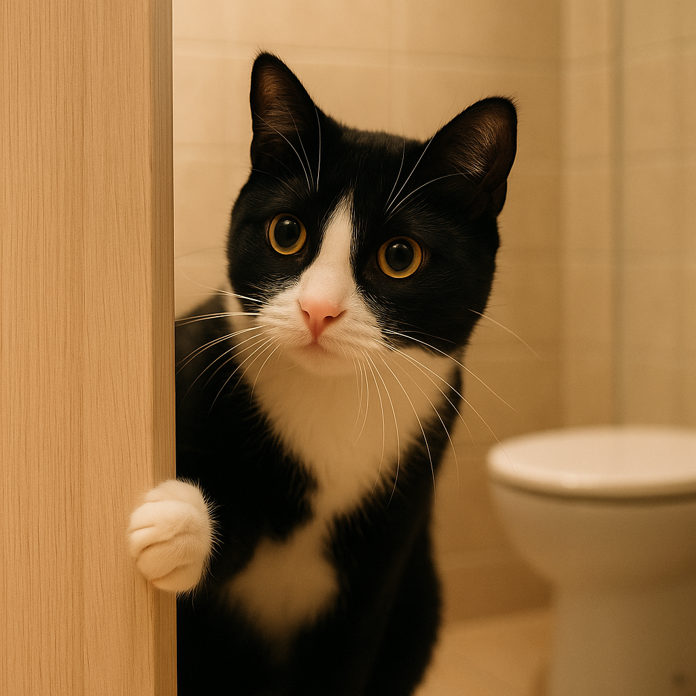

Por que os gatos te seguem até o banheiro?

Por Plantas & Gatos — Explorando os mistérios e manias dos felinos com afeto e curiosidade
Se o seu gato insiste em te acompanhar até o banheiro, saiba que você não está sozinho — e que a ciência tem respostas curiosamente carinhosas para esse hábito. Por trás desse comportamento estão traços de apego, instinto de vigilância e até o simples prazer de compartilhar a rotina com você.
🧠 Apego seguro: o vínculo invisível
Estudos da Oregon State University mostram que gatos formam vínculos de apego com seus tutores semelhantes aos observados entre humanos. No banheiro, onde você finalmente fica parado e tranquilo, o gato encontra um momento de estabilidade emocional — e decide aproveitar para ficar perto.
🏠 Curiosidade territorial
Gatos são animais territorialistas por natureza, e portas fechadas desafiam seu senso de controle sobre o ambiente. Quando você entra e fecha a porta, o gato sente a necessidade de “investigar” o que está acontecendo. O banheiro, com seus sons de água e odores únicos, é um convite irresistível à curiosidade felina.
⏰ Rotina e associação positiva
Os felinos adoram previsibilidade. Se sua rotina inclui ir ao banheiro antes de alimentar o gato ou interagir com ele, isso cria uma associação positiva. O resultado? Ele passa a entender o banheiro como um momento de conexão e atenção garantida.
💧 Atração sensorial
Além do apego, há um fator físico envolvido. O banheiro é um espaço fresco, úmido e cheio de estímulos sensoriais: o som da água corrente, o reflexo do espelho, o cheiro de sabonete... tudo desperta a curiosidade natural de um gato saudável e explorador.
💚 Vínculo e proteção
Em grupos felinos, é comum que um indivíduo observe o outro em momentos vulneráveis — um comportamento de vigilância protetiva. Ao te seguir até o banheiro, seu gato pode simplesmente estar expressando o desejo de garantir que você está seguro, transformando um gesto banal em um ato de cuidado silencioso.
😹 Humor e convivência
Claro, há também o lado cômico: o gato que te encara durante a descarga, brinca com o papel higiênico ou deita no tapete observando tudo como se fosse uma cerimônia. Essa convivência íntima reforça o quanto eles são parte da nossa vida — até nos momentos mais privados.
Em resumo: gatos seguem seus tutores ao banheiro por curiosidade, rotina, vínculo e desejo de companhia. O que parece invasão é, na verdade, um pequeno gesto de amor felino.
← Voltar para o blog